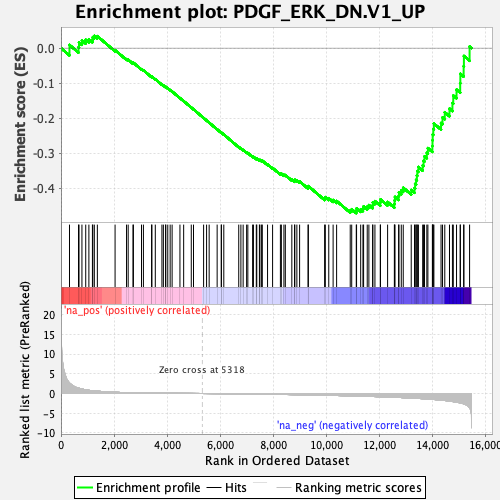

| | | Dataset | DE_genes |
| Phenotype | NoPhenotypeAvailable |
| Upregulated in class | na_neg |
| GeneSet | PDGF_ERK_DN.V1_UP |
| Enrichment Score (ES) | -0.4708033 |
| Normalized Enrichment Score (NES) | -1.451679 |
| Nominal p-value | 0.00979021 |
| FDR q-value | 0.15599754 |
| FWER p-Value | 0.659 |
Table: GSEA Results Summary

Fig 1: Enrichment plot: PDGF_ERK_DN.V1_UP
Profile of the Running ES Score & Positions of GeneSet Members on the Rank Ordered List
| PROBE | GENE SYMBOL | GENE_TITLE | RANK IN GENE LIST | RANK METRIC SCORE | RUNNING ES | CORE ENRICHMENT | | 1 | GLRX | | | 320 | 2.627 | 0.0092 | No |
| 2 | COL1A1 | | | 660 | 1.356 | 0.0026 | No |
| 3 | ADCY7 | | | 679 | 1.316 | 0.0164 | No |
| 4 | CLEC2B | | | 789 | 1.127 | 0.0222 | No |
| 5 | SND1-IT1 | | | 932 | 0.943 | 0.0237 | No |
| 6 | ORC3 | | | 1051 | 0.801 | 0.0252 | No |
| 7 | TAF12 | | | 1184 | 0.693 | 0.0245 | No |
| 8 | STX12 | | | 1199 | 0.679 | 0.0313 | No |
| 9 | CLCN2 | | | 1256 | 0.636 | 0.0350 | No |
| 10 | MID1 | | | 1370 | 0.575 | 0.0342 | No |
| 11 | LUZP2 | | | 2038 | 0.316 | -0.0057 | No |
| 12 | CCP110 | | | 2470 | 0.214 | -0.0313 | No |
| 13 | HSPA4L | | | 2532 | 0.203 | -0.0329 | No |
| 14 | FSTL4 | | | 2713 | 0.175 | -0.0427 | No |
| 15 | TAF1B | | | 2729 | 0.173 | -0.0417 | No |
| 16 | KIFAP3 | | | 3034 | 0.138 | -0.0599 | No |
| 17 | KIR3DL2 | | | 3106 | 0.130 | -0.0630 | No |
| 18 | OPRK1 | | | 3413 | 0.106 | -0.0818 | No |
| 19 | ATXN7 | | | 3427 | 0.106 | -0.0814 | No |
| 20 | MPI | | | 3554 | 0.096 | -0.0885 | No |
| 21 | SNRNP40 | | | 3804 | 0.081 | -0.1038 | No |
| 22 | OCA2 | | | 3858 | 0.078 | -0.1064 | No |
| 23 | CETN2 | | | 3942 | 0.073 | -0.1109 | No |
| 24 | MAP2 | | | 3949 | 0.073 | -0.1105 | No |
| 25 | DDN | | | 4024 | 0.068 | -0.1145 | No |
| 26 | ACOT11 | | | 4114 | 0.063 | -0.1196 | No |
| 27 | MYBPC3 | | | 4188 | 0.059 | -0.1237 | No |
| 28 | GNMT | | | 4483 | 0.043 | -0.1424 | No |
| 29 | ATF6 | | | 4623 | 0.035 | -0.1510 | No |
| 30 | PPIP5K2 | | | 4910 | 0.021 | -0.1694 | No |
| 31 | NRG1 | | | 4994 | 0.016 | -0.1746 | No |
| 32 | TAT | | | 5375 | -0.003 | -0.1994 | No |
| 33 | CPS1 | | | 5487 | -0.008 | -0.2065 | No |
| 34 | MYO1E | | | 5584 | -0.014 | -0.2126 | No |
| 35 | NTNG1 | | | 5885 | -0.031 | -0.2318 | No |
| 36 | COL10A1 | | | 6041 | -0.042 | -0.2414 | No |
| 37 | HEBP2 | | | 6045 | -0.042 | -0.2411 | No |
| 38 | NOS2 | | | 6136 | -0.049 | -0.2464 | No |
| 39 | NEU3 | | | 6699 | -0.088 | -0.2820 | No |
| 40 | PKN2 | | | 6780 | -0.093 | -0.2861 | No |
| 41 | ANXA11 | | | 6865 | -0.100 | -0.2905 | No |
| 42 | GALNT3 | | | 6996 | -0.110 | -0.2977 | No |
| 43 | SNRPD3 | | | 7042 | -0.114 | -0.2993 | No |
| 44 | FAM149B1 | | | 7222 | -0.129 | -0.3095 | No |
| 45 | PPP1R37 | | | 7253 | -0.131 | -0.3100 | No |
| 46 | AAGAB | | | 7361 | -0.141 | -0.3153 | No |
| 47 | FCHSD2 | | | 7379 | -0.143 | -0.3148 | No |
| 48 | KLK7 | | | 7478 | -0.150 | -0.3195 | No |
| 49 | NUP160 | | | 7497 | -0.152 | -0.3189 | No |
| 50 | LEPROT | | | 7561 | -0.158 | -0.3212 | No |
| 51 | ZNF84 | | | 7586 | -0.160 | -0.3209 | No |
| 52 | PMP22 | | | 7785 | -0.178 | -0.3318 | No |
| 53 | TSPAN5 | | | 7975 | -0.196 | -0.3419 | No |
| 54 | MRPS11 | | | 8269 | -0.226 | -0.3584 | No |
| 55 | IL12RB1 | | | 8306 | -0.230 | -0.3581 | No |
| 56 | LRCH4 | | | 8402 | -0.240 | -0.3616 | No |
| 57 | ANXA7 | | | 8455 | -0.246 | -0.3621 | No |
| 58 | LMAN1 | | | 8700 | -0.274 | -0.3749 | No |
| 59 | PDIA3 | | | 8802 | -0.286 | -0.3782 | No |
| 60 | NDUFS1 | | | 8813 | -0.287 | -0.3756 | No |
| 61 | TBX5 | | | 8890 | -0.296 | -0.3771 | No |
| 62 | RTCA | | | 8993 | -0.309 | -0.3803 | No |
| 63 | TAB1 | | | 9311 | -0.348 | -0.3969 | No |
| 64 | MAOA | | | 9323 | -0.350 | -0.3936 | No |
| 65 | SPAG5 | | | 9936 | -0.438 | -0.4285 | No |
| 66 | CORO2B | | | 9962 | -0.442 | -0.4251 | No |
| 67 | THOC2 | | | 10092 | -0.460 | -0.4282 | No |
| 68 | GTF2H5 | | | 10256 | -0.484 | -0.4333 | No |
| 69 | RRBP1 | | | 10388 | -0.503 | -0.4361 | No |
| 70 | EXOSC10 | | | 10901 | -0.582 | -0.4628 | No |
| 71 | C17orf75 | | | 10957 | -0.590 | -0.4597 | No |
| 72 | TCEAL2 | | | 11129 | -0.621 | -0.4637 | Yes |
| 73 | MAML3 | | | 11140 | -0.624 | -0.4572 | Yes |
| 74 | NCKAP1L | | | 11295 | -0.655 | -0.4598 | Yes |
| 75 | CHEK2 | | | 11381 | -0.675 | -0.4576 | Yes |
| 76 | ALDH5A1 | | | 11405 | -0.680 | -0.4513 | Yes |
| 77 | SERINC1 | | | 11542 | -0.707 | -0.4521 | Yes |
| 78 | MVK | | | 11604 | -0.721 | -0.4479 | Yes |
| 79 | ELP4 | | | 11746 | -0.750 | -0.4485 | Yes |
| 80 | SNX19 | | | 11753 | -0.751 | -0.4403 | Yes |
| 81 | CDK6 | | | 11832 | -0.768 | -0.4366 | Yes |
| 82 | CFDP1 | | | 12035 | -0.812 | -0.4405 | Yes |
| 83 | CDC14B | | | 12040 | -0.812 | -0.4315 | Yes |
| 84 | AQP3 | | | 12310 | -0.879 | -0.4389 | Yes |
| 85 | TP53I3 | | | 12564 | -0.944 | -0.4446 | Yes |
| 86 | NEK9 | | | 12573 | -0.945 | -0.4344 | Yes |
| 87 | ACP5 | | | 12587 | -0.950 | -0.4244 | Yes |
| 88 | PPIC | | | 12725 | -0.989 | -0.4220 | Yes |
| 89 | KBTBD11 | | | 12737 | -0.993 | -0.4114 | Yes |
| 90 | FLI1 | | | 12825 | -1.019 | -0.4054 | Yes |
| 91 | ATXN2 | | | 12899 | -1.045 | -0.3982 | Yes |
| 92 | RBM3 | | | 13200 | -1.139 | -0.4048 | Yes |
| 93 | NRIP1 | | | 13324 | -1.181 | -0.3993 | Yes |
| 94 | TNNT2 | | | 13348 | -1.192 | -0.3872 | Yes |
| 95 | HDLBP | | | 13384 | -1.206 | -0.3757 | Yes |
| 96 | NDN | | | 13413 | -1.218 | -0.3636 | Yes |
| 97 | PHLDA2 | | | 13430 | -1.223 | -0.3507 | Yes |
| 98 | PSMB10 | | | 13471 | -1.242 | -0.3391 | Yes |
| 99 | ST6GAL1 | | | 13632 | -1.302 | -0.3346 | Yes |
| 100 | INHBA | | | 13665 | -1.317 | -0.3217 | Yes |
| 101 | XPA | | | 13701 | -1.332 | -0.3087 | Yes |
| 102 | SWAP70 | | | 13789 | -1.378 | -0.2987 | Yes |
| 103 | ZNF185 | | | 13828 | -1.392 | -0.2852 | Yes |
| 104 | LAS1L | | | 13997 | -1.470 | -0.2794 | Yes |
| 105 | EXOSC8 | | | 14002 | -1.471 | -0.2629 | Yes |
| 106 | VPS39 | | | 14009 | -1.475 | -0.2464 | Yes |
| 107 | OXCT1 | | | 14032 | -1.486 | -0.2309 | Yes |
| 108 | LRPAP1 | | | 14054 | -1.504 | -0.2151 | Yes |
| 109 | SERPINB2 | | | 14324 | -1.672 | -0.2135 | Yes |
| 110 | CALML4 | | | 14380 | -1.703 | -0.1976 | Yes |
| 111 | HYAL1 | | | 14465 | -1.763 | -0.1829 | Yes |
| 112 | RPIA | | | 14642 | -1.912 | -0.1726 | Yes |
| 113 | REST | | | 14753 | -2.021 | -0.1567 | Yes |
| 114 | TSPAN9 | | | 14785 | -2.051 | -0.1353 | Yes |
| 115 | TRAF5 | | | 14908 | -2.175 | -0.1184 | Yes |
| 116 | PAN2 | | | 15046 | -2.375 | -0.1002 | Yes |
| 117 | MTHFR | | | 15052 | -2.388 | -0.0732 | Yes |
| 118 | DNAJC7 | | | 15176 | -2.587 | -0.0517 | Yes |
| 119 | EXOSC7 | | | 15186 | -2.621 | -0.0223 | Yes |
| 120 | SLC39A7 | | | 15400 | -3.576 | 0.0046 | Yes |
Table: GSEA details [plain text format]
Fig 2: PDGF_ERK_DN.V1_UP: Random ES distribution
Gene set null distribution of ES for PDGF_ERK_DN.V1_UP